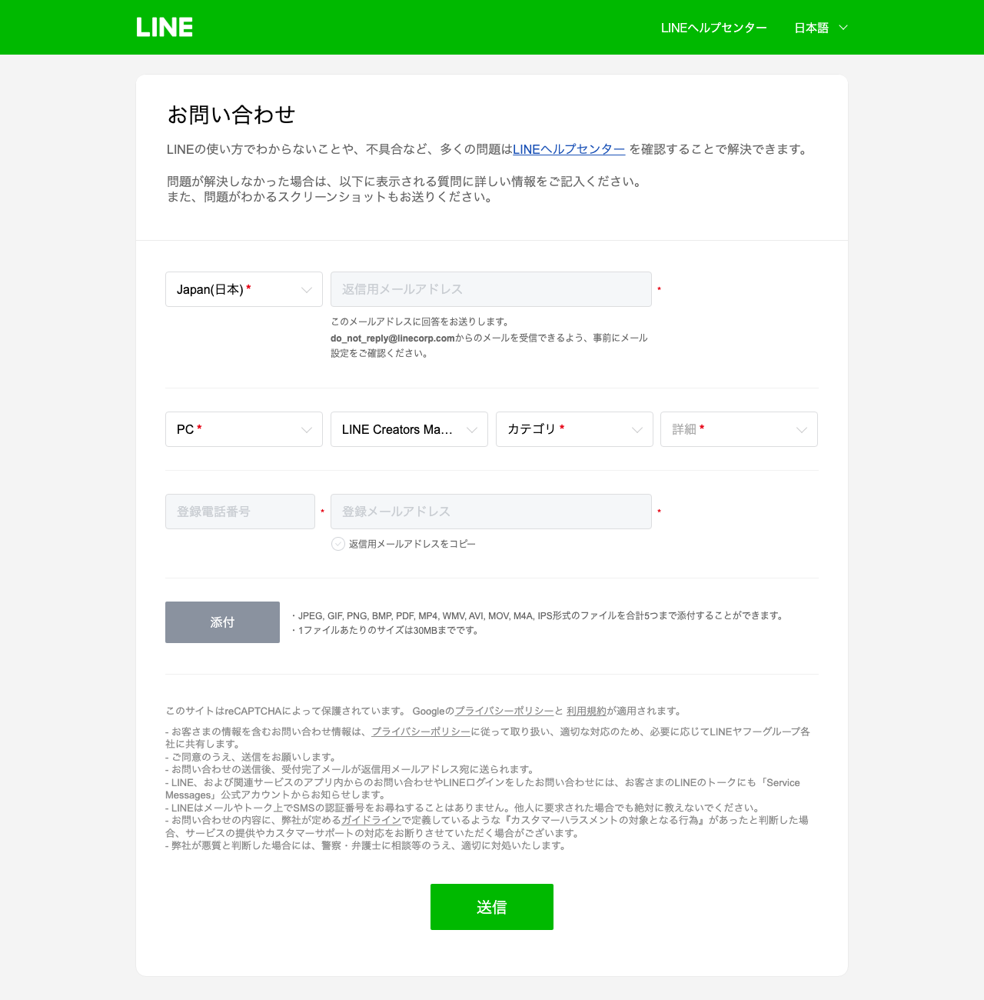
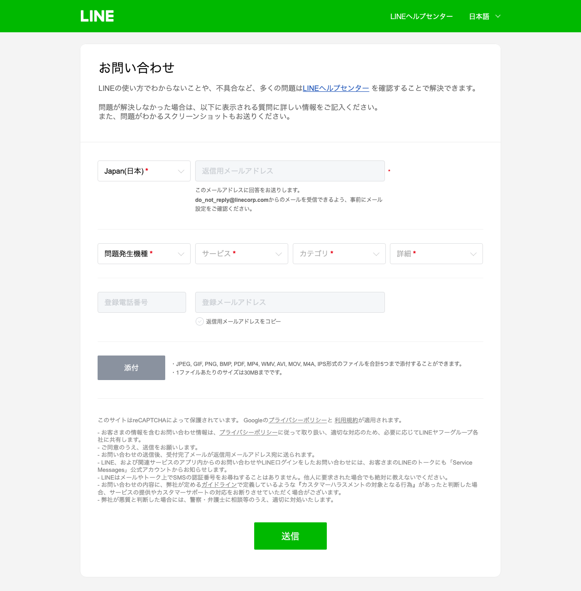
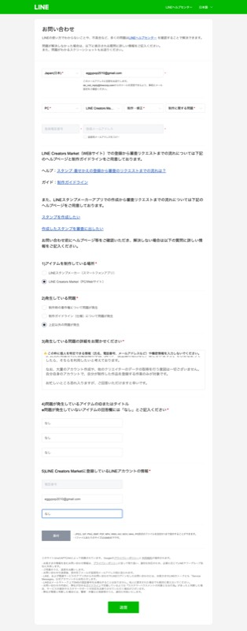
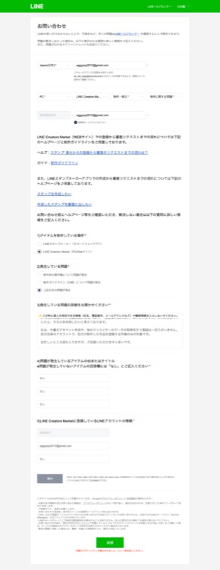

【件名】スタンプ申請作業の自動化について（規約上の可否のご確認） お世話になっております。 LINE Creators Marketでスタンプを制作・販売しております miketamawae と申します。 申請作業の効率化について、規約上の可否を正面からご確認させてください。 現在、自分で用意した画像・タイトル・説明文の素材を使い、AIエージェント（自動化ツール）に、申請フォームへの入力・画像のアップロード・審査リクエストの送信までを代行させることを検討しております。隠さずお伝えしますと、これが実現できれば、毎回の管理画面への入力作業（画像アップロード、タイトル・説明文の入力、販売設定の選択）にかかる時間を大きく減らせると考えております。 お伺いしたいのは次の5点です。 1. 素材（画像・タイトル・説明文）はすべて本人が用意したものです。この素材を使って、申請フォームへの入力・アップロード・審査リクエストの送信を、本人（アカウント名義人）の依頼でAIエージェントに代行させることは、貴社の利用規約上認められますか。 2. 認められない場合、どこまでの自動化であれば認められますか（例：素材作成のみは可／入力の下書き保存までは可／入力自体も可／審査リクエストの送信も可、など、具体的な境界線をご教示いただけますと幸いです）。 3. 利用規約12.11条「本サービスのサーバやネットワークシステムに支障を与える行為、BOT、チートツール、その他の技術的手段を利用して本サービスを不正に操作する行為」とありますが、本人の依頼で本人のアカウントを操作する上記のような自動化は、この条項に該当しますか。 4. 該当する場合、アカウントの停止や削除の対象になりますか。利用規約4.6条「クリエイターの本サービスにおけるすべての権利は、理由を問わず、アカウントが削除された時点で消滅します」「アカウントの復旧はできません」を拝読した上でのご質問です。 5. 公式に用意された自動投稿の手段（APIや一括登録の窓口など）はございますか。もしあるようでしたら、そちらを利用したいと考えております。 なお、大量のアカウント作成や、他のクリエイターのデータの取得を行う意図は一切ございません。自分自身のアカウントで、自分が制作した作品を登録する作業のみが対象です。 お忙しいところ恐れ入りますが、ご回答いただけますと幸いです。
【件名】スタンプ申請作業の自動化について（規約上の可否のご確認） お世話になっております。 LINEスタンプメーカーを利用してスタンプを制作・販売しております miketamawae と申します。 申請作業の効率化について、規約上の可否を正面からご確認させてください。 現在、自分で用意した画像・タイトル・説明文の素材を使い、AIエージェント（自動化ツール）に、申請フォームへの入力・画像のアップロード・審査リクエストの送信までを代行させることを検討しております。隠さずお伝えしますと、これが実現できれば、毎回の管理画面への入力作業（画像アップロード、タイトル・説明文の入力、販売設定の選択）にかかる時間を大きく減らせると考えております。 お伺いしたいのは次の5点です。 1. 素材（画像・タイトル・説明文）はすべて本人が用意したものです。この素材を使って、申請フォームへの入力・アップロード・審査リクエストの送信を、本人（アカウント名義人）の依頼でAIエージェントに代行させることは、貴社の利用規約上認められますか。 2. 認められない場合、どこまでの自動化であれば認められますか（例：素材作成のみは可／入力の下書き保存までは可／入力自体も可／審査リクエストの送信も可、など、具体的な境界線をご教示いただけますと幸いです）。 3. 貴社の利用規約には、BOTやチートツール等の技術的手段を用いて本サービスを不正に操作する行為を禁じる条項があると理解しております（LINE Creators Market利用規約12.11条に相当する条項）。本人の依頼で本人のアカウントを操作する上記のような自動化は、この条項に該当しますか。 4. 該当する場合、アカウントの停止や削除の対象になりますか。アカウントが削除された場合、権利が復旧できないと理解した上でのご質問です。 5. 公式に用意された自動投稿の手段（APIや一括登録の窓口など）はございますか。もしあるようでしたら、そちらを利用したいと考えております。 なお、大量のアカウント作成や、他のクリエイターのデータの取得を行う意図は一切ございません。自分自身のアカウントで、自分が制作した作品を登録する作業のみが対象です。 お忙しいところ恐れ入りますが、ご回答いただけますと幸いです。
mdInput01SummaryTextarea）はreadonly（編集不可）で、
機種→サービス→カテゴリ→詳細の4段階を正しく選び終えるまで開放されない設計だった。
これを知らずに無理やり入力を試みたところ、本文がなぜか「返信用メールアドレス」欄に混じって入ってしまう事故が実際に起きた
（送信はしていないため実害はないが、この画面のままでは自動入力は危険と判明）。
だからこそ、AIによる完全自動送信ではなく、この文面を人が読んでコピペで貼るのが最も安全で確実。


| 確認項目 | 結果 |
|---|---|
| 本文欄への直接入力（自動） | 791番時点：readonly保護で不可・メール欄への誤混入を実測 |
| 「ログインせずに続ける」の突破 | 可能（実際に3回成功） |
| メール文面の確定（5項目・両窓口） | 完了・下のとおり |
| 【801番】正しい手順での全項目自動入力（本文含む） | 成功・混入なしを実測（⑥参照） |
| 【801番】送信ボタンを実際に押す | reCAPTCHAが「不審なアクティビティ」でブロック（⑥参照） |
| 【801番】返信の見張り（Gmail） | 実装・心臓組み込み済みだが鍵未設定で停止中（⑦参照） |


eggypop2010@gmail.com、本文欄に上の①のメール文面をコピペ、ID欄3つに「なし」、登録メールアドレスに eggypop2010@gmail.com、機種名に「なし」tools/check_line_reply.py）は実装済みで、既存の心臓（tools/heartbeat.sh）に組み込み済み。
1日1回、Gmail(eggypop2010@gmail.com)を見に行く動きも実際に動いている（直近実行 2026-09-16 19:13）。"blocked": "no_credential" という状態で止まっている。
これはパスワード類なのでAI側では代行できない（値を見ない・触らないルールのため）。~/.tamago/gmail_app_password に、そのパスワードだけを1行で書いて保存してください。
保存されれば、次の心臓の実行（15秒おきに動いているうちの1回、実際にGmailを見に行くのは1日1回に間引き済み）から自動的に見張りが動き出す。